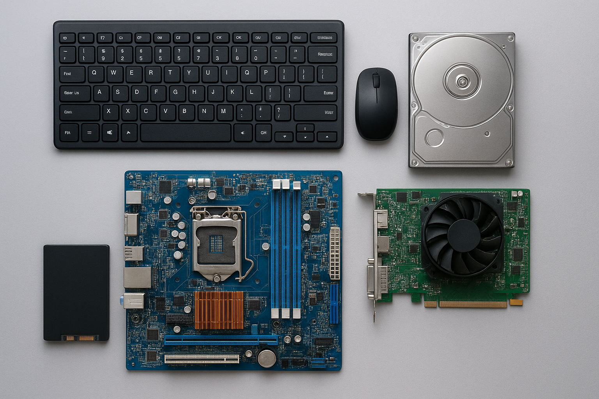

Computer Hardware

Computer hardware refers to the tangible, physical components of a computer system. These are the devices that you can see and touch, unlike software which is intangible.
Input Devices
Input devices allow the user to interact with the computer by providing data and control signals. Examples include:
- Keyboard – Used to input text and commands.
- Mouse – A pointing device for navigation.
- Scanner – Converts physical documents into digital format.
- Microphone – Captures audio input.
- Webcam – Captures video input.
Output Devices
Output devices display or transmit the results of computer processing to the user:
- Monitor – Displays visual output.
- Printer – Produces physical copies of documents.
- Speakers – Outputs sound.
- Projector – Displays output on larger screens.
Storage Devices
Storage devices are used to store data permanently or temporarily:
- Hard Disk Drive (HDD) – Traditional magnetic storage.
- Solid State Drive (SSD) – Faster, electronic storage.
- Pen Drive/USB Drive – Portable flash storage.
- Optical Discs (CD/DVD/Blu-ray) – Media storage for files.
- Memory Cards – Used in cameras and smartphones.
Processing Devices
The processing unit executes instructions and manages tasks:
- CPU (Central Processing Unit) – The brain of the computer.
- GPU (Graphics Processing Unit) – Handles graphic rendering.
- RAM (Random Access Memory) – Temporary memory for running programs.
Peripheral Devices
Peripherals extend the functionality of a computer:
- External Hard Drives – Extra storage capacity.
- Printers and Scanners – Document handling.
- External Keyboards and Mice – Better ergonomics.
Conclusion
Understanding hardware is fundamental for anyone learning about computers. Each component has a specific role that contributes to the overall functioning of a computer system.